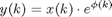

PhaseNoiseClass
Parent class: NonIdealityClass. PhaseNoiseClass is a generic nonideality generated in the VCO. Many phase noise model exists, maybe the most general one is a phase modulation:

where phi(k) is a "modulator" signal.
Properties
None.
Methods
multiplier
output=obj.multiplier(signal)
Method multiplier computes the